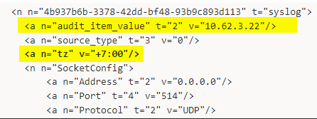

Symptom
Activity Records and logs collected by Netwrix Auditor for Network Devices contain incorrect date and time values.
Cause
The time zone of network devices might be different from the Auditor Server time zone.
Resolution
-
Customize the time format in the events at the device end so it does not include UTC.
Oct 27 10:51:05instead ofOct 27 10:51:05 UTC.For Cisco devices, use the following instructions: service timestamps ⸱ Cisco 🡥
-
Adjust the time zone settings in the Netwrix Auditor configuration file.
-
On the Auditor Server, stop the Netwrix Auditor Configuration Server Service.
-
Navigate to the
Configuration.xmlfile and make a backup. (%Working Folder%\AuditCore\ConfigServer\Configuration.xml) -
Open the
Configuration.xmlfile in an editor and search for the name/IP address of your network device as it appears in your monitoring plan. -
Locate the entry where audit_item_value is equal to your device’s identifier (name or IP).
-
Adjust the time zone by modifying the v=" " parameter next to the tz attribute.
 -
If you have multiple devices in the Network Devices plan, repeat these steps for each device.
-
Once complete, save the file and restart the Netwrix Auditor Configuration Server Service.
-